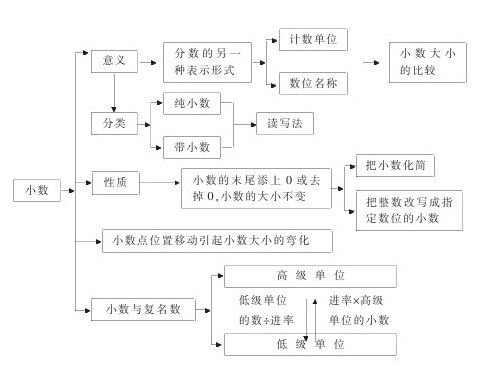
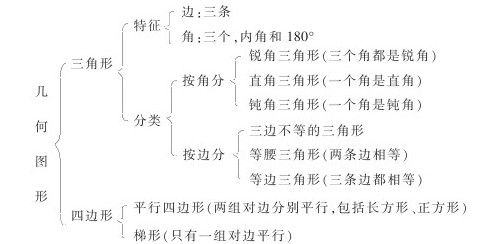

五年制小学数学第七册教材知识结构 [1]
从第七册教材内容来看，小数的意义和性质、小数的四则计算、小数四则混合运算和应用题以及三角形、平行四边形和梯形这几部分内容是本册的教学重点。年、月、日虽不是教学重点，但在实际生产、生活中有着广泛的应用，因此也必须学好。
小数的系统学习是在学生熟练地掌握整数四则运算的基础上进行的，小数和整数的联系又十分密切。例如，小数的计算单位间的进率跟整数的相同，小数的数位直接安排在整数数位的右面；小数大小的比较与整数的大小比较类似；小数四则运算的法则与整数的计算法则基本一致，主要的不同是要处理小数点，这种教材结构有利于从整体上把握教材，不能孤立地、割裂地看待所教学的每一部分知识，要明确所教内容在整个知识体系中的地位和作用、联系及区别。
各单元教材的知识点一般都呈网状结构，如“小数的意义和性质”，其知识点的组成及联系如下：

三角形、平行四边形和梯形知识结构如下：

其他内容的知识结构略。
教师只要掌握了教材的知识结构，就能居高临下地处理教材，就能把握教学的主动权，教学时就能得心应手。